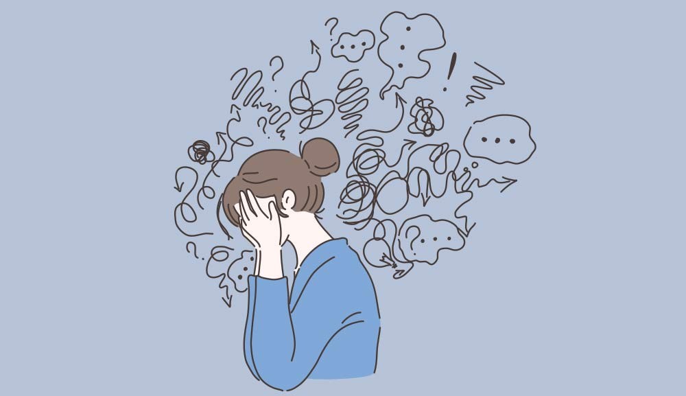

Trastorno de ansiedad, incluyendo trastorno de pánico, trastorno obsesivo-compulsivo y fobias
¿Qué es la ansiedad?
La ansiedad es un mecanismo de defensa que el cuerpo emplea cuando siente peligro inminente. A veces, puede ser producido por preocupaciones futuras que a día de hoy son inexistentes.
Algunos de sus síntomas
- Sensación de nerviosismo o tensión
- Sensación de peligro inminente, pánico o catástrofe
- Aumento del ritmo cardíaco
- Respiración acelerada (hiperventilación)
- Sudoración
- Temblores
- Sensación de debilidad o cansancio
- Problemas para concentrarse o para pensar en otra cosa que no sea la preocupación actual
- Tener problemas para conciliar el sueño
- Padecer problemas gastrointestinales
- Tener dificultades para controlar las preocupaciones
- Tener la necesidad de evitar las situaciones que generan ansiedad
Cuando consultar con un profesional
- Sientes que te estás preocupando demasiado y que esto interfiere en tu trabajo, tus relaciones y otros aspectos de tu vida
- Tu ansiedad te causa malestar y te resulta difícil controlarla
- Te sientes deprimido, tienes problemas con el consumo de alcohol o drogas, o tienes otros problemas de salud mental junto con ansiedad
- Piensas que tu ansiedad podría estar vinculada a un problema de salud física
- Tienes pensamientos o conductas suicidas (de ser así, procura tratamiento de urgencia inmediatamente)